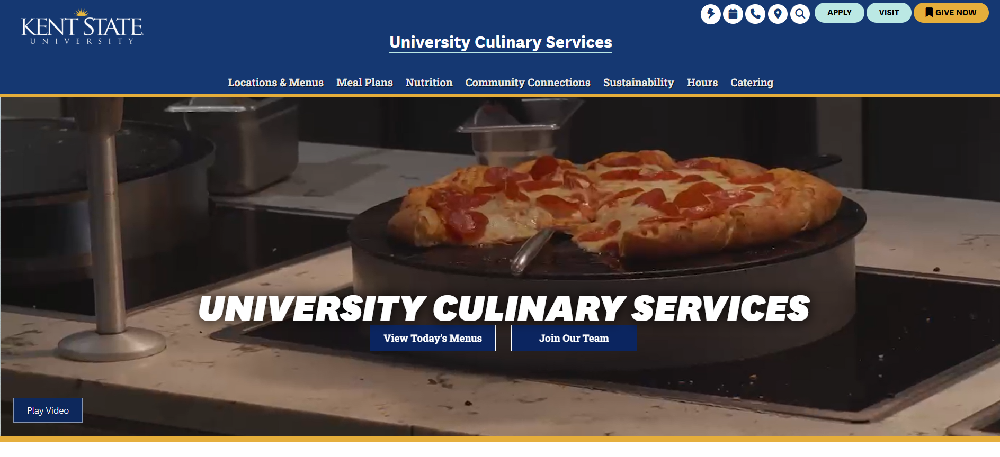
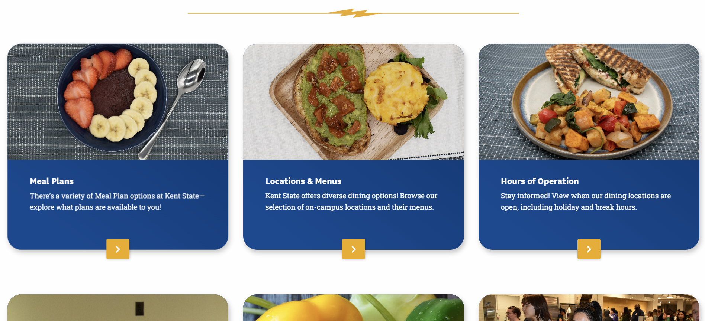
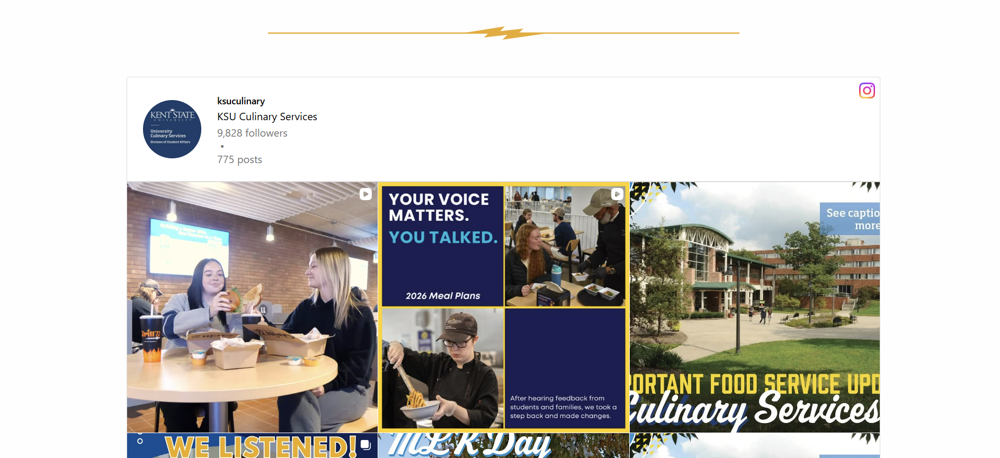
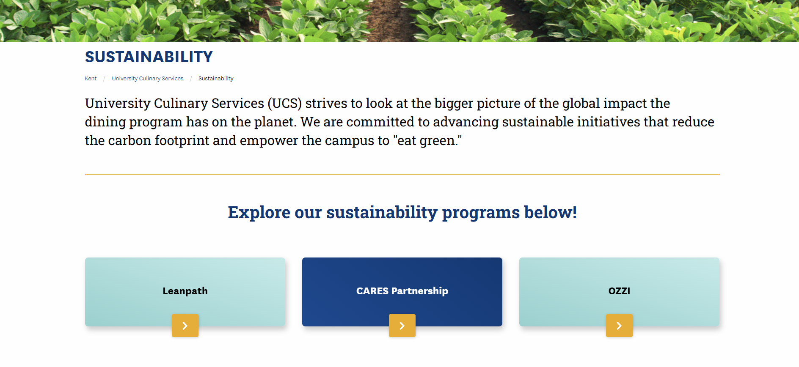

Pets First

UCS Homepage - Top Section

UCS Homepage - Middle Section

UCS Homepage - Bottom Section

UCS Locations & Menus Webpage

UCS Sustainability Webpage
This is a responsive HTML website that I created in an undergraduate responsive web design class. This is a mock website for a fake veterinary clinic.
- Wireframed an initial website design using Adobe XD based off a stock client’s goals and brand
- Utilized mobile-first approach to code a fully responsive website from scratch using Visual Studio Code
- Please note that some links on this site are empty due to this being a class project and not a “real” client site
KSU Culinary Services Refresh
UCS Homepage - Top Section
UCS Homepage - Middle Section
UCS Homepage - Bottom Section
UCS Locations & Menus Webpage
UCS Sustainability Webpage
While at my current Web Support job in KSU's Student Life Marketing & Communications department, I worked on redesigning the UCS website.
- Collaborated with UCS staff and Marketing & Communications staff to understand the evolving needs of the department
- Used a sandbox environment to build and explore redesigns for existing webpages
- Utilize Drupal to implement approved webpage redesigns with updated content and more visual or interactive elements, such as photo carousels
The Entrepreneurial Roadmap

This is a real website that I helped build in a graduate Foundations in Emerging Media and Technology course. This was created in collarboration with LauchNET at Kent State University.
- Collaborated with a team of two classmates to brainstorm, design, and build a new entrepreneurial-based website to act as a resource repository
- Utilized Drupal to incorporate content provided by my team into a homepage and three main webpages that are all interactive
AccentEquip
This is a real client's website that I worked on while interning at the IdeaBase design agency at Kent State.
- Collaborated with an external client to understand her company’s brand, mission, and website needs
- Utilized WordPress to design and build site navigation, page structures, and important content
- Integrated a third-party calendar platform for appointment booking purposes